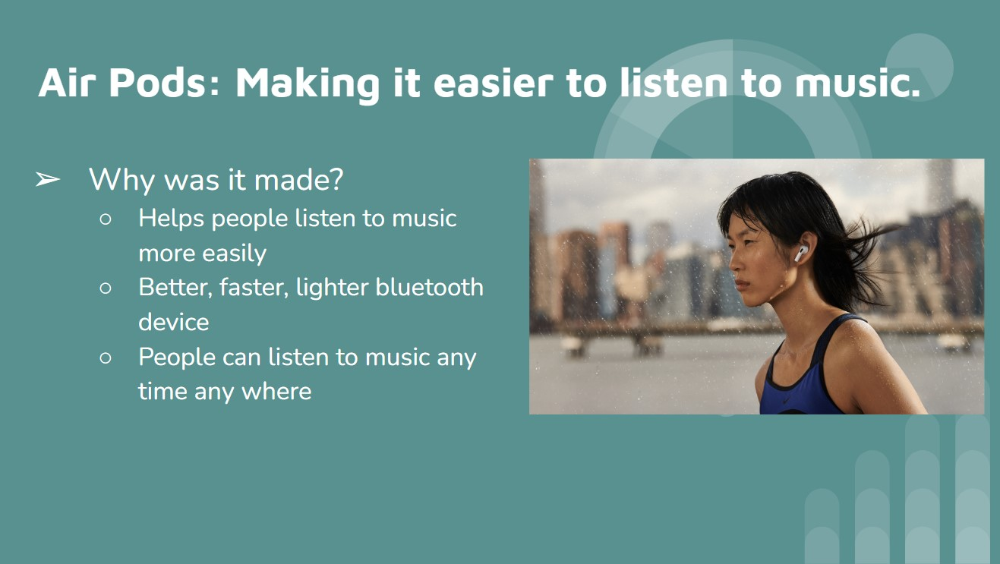
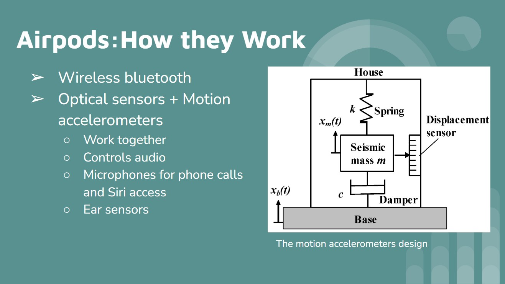
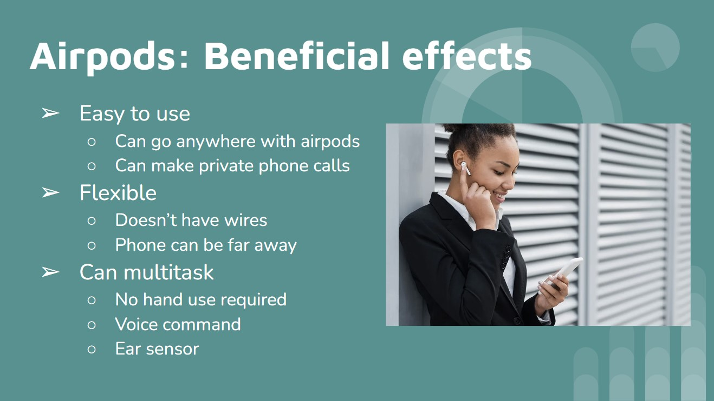
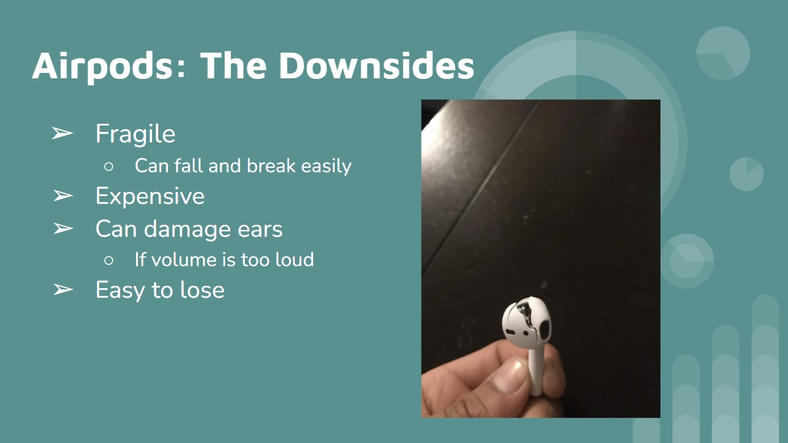

The Airpods

Airpods are very flexible to use. You can use them while working, exercising, relaxing and more.

Airpods us optical sensors and motion accelometers, giving airpods advancments like ear detection, microphones, and siri activation.

Airods can be used anywhere. They are helpful for multitasking as you don't have to use your hands to play music through them. They are also easy to exercise with and have phone calls.

Although airpods are a brilliant innovation, they have some downsides. Airpods can be pretty expensive, and adding to that they are fragile and break easily. They are also very easy to lose.
Two of my favorite JOC projects this year.

Here is a project we made for mothers day. This involved special techniques in photoshop that helped make shapes, sample colors, and fade the hardness of colors. I loved the way my result turned out and my mom loved it too.
Here is a project we did in semester 1. This is another one my favorite projects because to see the result of the finished app was very satisfying. This project involved many techniques in app inventor like using links, different media and button tools, layouts, and more.